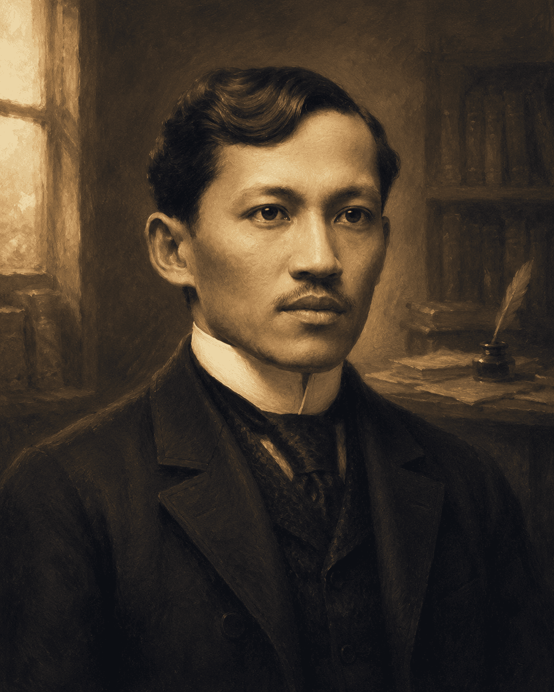

Physician, novelist, and polyglot whose pen challenged an empire — walk through his life as though turning the pages of history itself.
The youth is the hope of our future.
Rizal arrived on the nineteenth of June, 1861, the seventh of eleven children born to Francisco Mercado and Teodora Alonso in the quiet river town of Calamba, Laguna. His mother, educated far beyond what was expected of women of her era, taught him his letters before he could properly walk — and with them, a restlessness that no colony could contain.
He grew up between rice fields and a family library, absorbed early into a household that prized reading, discipline, and faith in equal measure. It was a childhood that looked ordinary from the outside, and rarely is.
In 1872, when Rizal was only eleven, the execution of Fathers Gomburza on charges of subversion left a lasting mark on him — his own brother Paciano had studied under Father Burgos.
He studied first at the Ateneo Municipal de Manila, then took up medicine at the University of Santo Tomas before sailing for Spain in 1882 to continue at the Universidad Central de Madrid. There, and later in Paris and Heidelberg, he specialized in ophthalmology — driven in part by his mother's failing eyesight, which he later treated himself.
Along the way he collected languages the way other men collect stamps: by the time he returned home, he moved comfortably through more than twenty of them, from Tagalog and Spanish to German, French, and Japanese.
Rizal completed his ophthalmology training partly so he could perform eye surgery on his own mother, Teodora Alonso, whose sight was failing.
Two novels, written years and countries apart, did what no pamphlet or petition had managed — they made colonial cruelty legible to the very people living inside it.
Both novels were banned by Spanish colonial authorities almost immediately — which, predictably, only made copies more sought after among Filipino readers.
Between 1882 and 1892, Rizal crossed continents rather than borders — Spain, France, Germany, Austria-Hungary, England, and later Japan and the United States on his voyages home. Each stop added a language, a friendship, or a piece of the argument he was slowly building.
The homecoming was short-lived. Founding La Liga Filipina in 1892 earned him swift exile to Dapitan, a remote coastal town in Zamboanga, where he spent four years farming, teaching local boys, practicing medicine, and engineering a working water system by hand.
In Dapitan, Rizal built a functioning water supply system for the town using little more than bamboo pipes, gravity, and careful engineering — self-taught, as with much of his medicine.
Rizal never advocated armed revolt — his instrument was reform through education and civic organization. La Liga Filipina sought to unite the archipelago and pursue change through lawful means; his writings gave the Propaganda Movement its clearest voice in Europe.
In Dapitan, that same reforming instinct turned local: a school for boys, a working clinic, agricultural experiments, and public works built by hand. He believed, above all, that an educated citizenry was the surest path to a free one.
Though Rizal opposed armed uprising, the Katipunan later adopted him as an inspiration and symbol — his name was reportedly used as a password among some of its members.
Convicted of rebellion, sedition, and conspiracy in a trial widely regarded since as a miscarriage of justice, Rizal was executed by firing squad on the morning of December 30, 1896, at Bagumbayan field. He was thirty-five years old.
The field is Rizal Park today, marked by the monument where he fell. More than a century later, December 30th is observed across the Philippines as Rizal Day — a national reminder of a life spent proving that a novel could unsettle an empire more than a rifle ever did.
Rizal Day has been observed as a Philippine national holiday since 1898 — making it one of the country's oldest continuously commemorated public holidays.